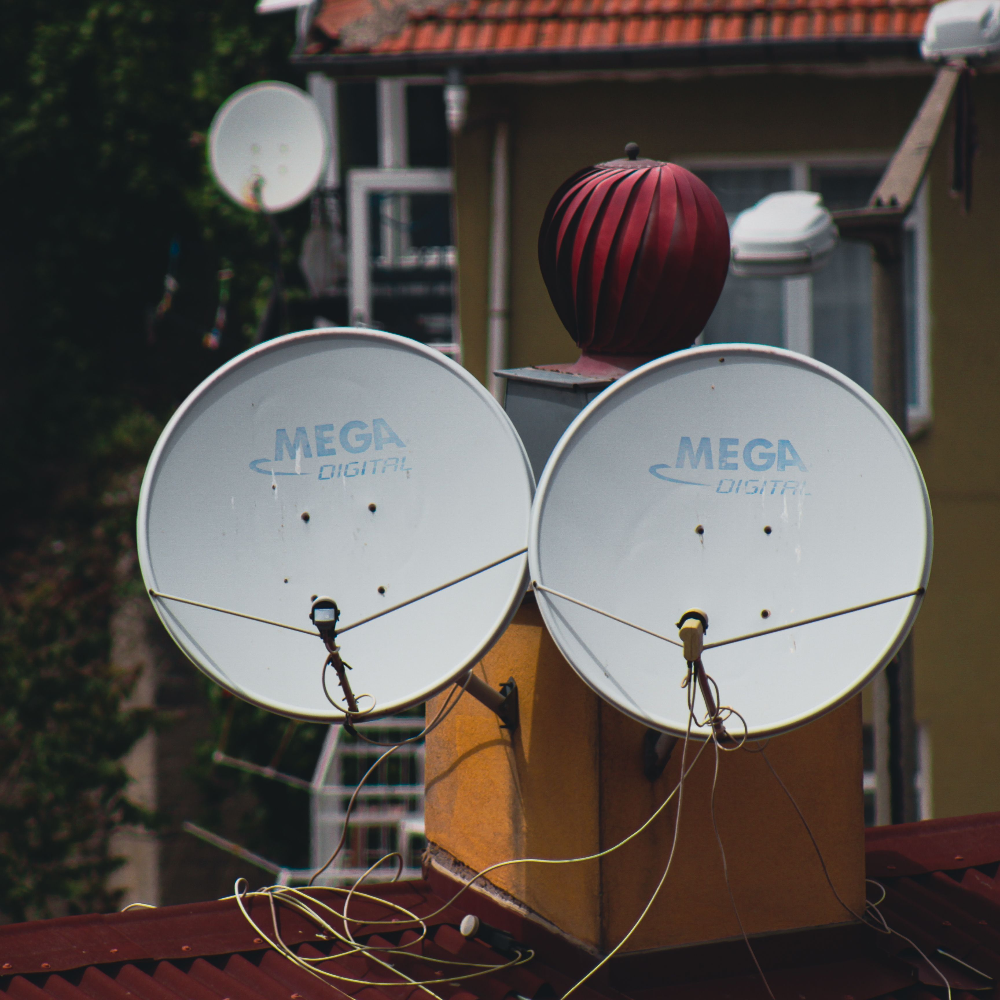

استقلالية كاملة عن الشبكات الأرضية
لا تعتمد الخدمة على البنية التحتية المحلية، لذلك تناسب المواقع المعزولة والبعيدة عن المدن.
حل مستقل عن الشبكات الأرضية، مصمم للمواقع النائية والبعيدة، ويضمن اتصالاً مستقراً للـ data والـ voice حتى عندما تكون البنية التقليدية مفقودة أو غير موثوقة.

عندما لا توجد شبكة أرضية موثوقة، أو عندما تحتاج إلى اتصال مستمر في بيئة صعبة، يصبح VSAT الخيار الأنسب. نساعدك في تصميم الشبكة بشكل يراعي موقعك، أوقات التشغيل، ومقاييس الأداء المطلوبة، لضمان وصولك إلى البيانات والاتصال دون تعطل.
لا تعتمد الخدمة على البنية التحتية المحلية، لذلك تناسب المواقع المعزولة والبعيدة عن المدن.
نصمم الأنظمة لتعمل بشكل مستمر داخل المواقع النائية مع حلول طاقة احتياطية متكاملة.
تستخدم أطباق استقبال متينة ومصممة لتحمل الطقس القاسي، بما يحافظ على استقرار الاتصال.
تتبع الشبكة تلقائيًا الأقمار المناسبة وفق الموقع والظروف، لتبقى الإشارة ثابتة ومستمرة.
نحدد احتياجك وأهداف الشبكة، ثم نضع النموذج المناسب على أساس الموقع والتحميل المتوقع.
نقوم بمراجعة الموقع بدقة لاختيار أفضل موقع للأطباق وقمر التشغيل الأنسب للأداء الأمثل.
تُنفذ التركيبة احترافياً في أسرع وقت، مع فحص كامل لضمان جاهزية النظام خلال 48 ساعة.
نواصل متابعة الأداء، نفحص الشبكة دوريًا، ونقدم الدعم الفني عند الحاجة لضمان استمرارية الخدمة.
اتصال مستقر للحقول والمواقع البعيدة، مع قدرة تشغيلية عالية في ظروف قاسية.
مراقبة البيانات، الاتصال بين المواقع، واستمرار التشغيل في بيئات بعيدة ومتشعبة.
توفر شبكة موثوقة في المناطق المتأثرة أو القريبة من نقاط الضعف لتسهيل التواصل.
حلول عملياتية قادرة على العمل في ظروف حرجة مع أمان واستمرارية عالية.
| سرعة البيانات | من 1 إلى 20 Mbps حسب الموقع والتحميل |
|---|---|
| النطاق | Ku-band و Ka-band |
| نوع التشغيل | مباشر، متحرك، ومصمم حسب متطلبات العميل |
| الاستمرارية | مستوى عالي مع طاقة احتياطية وتغطية موثوقة |
نستخدم أطباق مقاومة وظروف الطقس، وتتم معايرة النظام وفق متطلبات الموقع لضمان أفضل أداء ممكن في العواصف الرملية والأمطار.
يعتمد الزمن على طبيعة الموقع والتجهيزات المطلوبة، إلا أن معظم المشاريع تُنجز خلال 48 إلى 72 ساعة من التفعيل الأولي.
نعم، يمكن تصميم النظام ليعمل مع أنظمة الطاقة الشمسية والبطاريات الاحتياطية لتوفير استمرارية دون الاعتماد على الشبكة الأرضية.